Seer 怎么把同步 RL 的 rollout 提速一倍
同一个 prompt 采样出的一组回答，长度和 token 模式高度相似。Seer 把这个「组内相似性」当成在线信号，用来做调度和投机解码，在不破坏 on-policy 约束的前提下把端到端 rollout 吞吐提升 44–104%（最高 2.04×）。
30 秒抓住核心
训练推理型大模型时，RL 的 rollout（生成阶段）吃掉约 80% 的迭代时间。长 CoT 让输出长度从几百到 9.8 万 token 不等，方差极大，导致两个致命问题：显存忽大忽小触发抢占、以及少数超长请求拖出的长尾。
Seer 的破局点：GRPO 对同一个 prompt 采样 8–16 个回答，这一组回答的长度和 token 模式天然相似。Seer 把这个信号在线学出来，用三招——拆分 rollout、上下文感知调度、分组投机解码——精准调度并加速，而且完全等价于同步 on-policy 训练，结果无损。
为什么 rollout 是同步 RL 的瓶颈
RL 训练在两个阶段之间来回切换：rollout 阶段用当前策略采样生成回答，training 阶段用这些回答更新参数。问题是 rollout 太慢——在三个真实生产任务上，它平均吃掉约 80% 的迭代时间。
| 任务 | Rollout | Training | Weight Update |
|---|---|---|---|
| Moonlight | 84% | 14% | 2% |
| Qwen2-VL-72B | 63% | 31% | 6% |
| Kimi-K2 | 87% | 10% | 3% |
表 1：三个推理型 RL 任务里各阶段的时间占比。rollout 是绝对大头。
根因在于长生成。为了训练 long-CoT 推理能力，模型被鼓励写出越来越长的思维链，这带来两个特征：平均输出很长（几万 token）+ 长度方差极大（几百到 9.8 万 token）。下图是三个任务的输出长度分布。
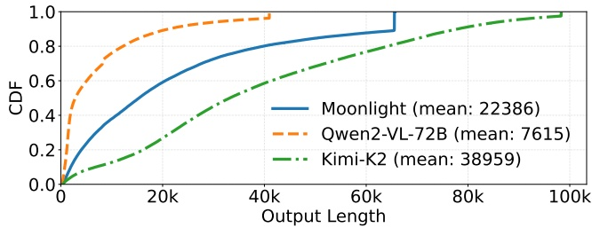
- 横轴是输出 token 数（可到 ~98K），纵轴是请求数量的分布密度。
- 分布呈重尾（heavy-tailed）形态：大量请求集中在中短长度，但有一条长长的尾巴延伸到几万 token。
- 这条尾巴正是麻烦所在：少数超长请求会在 rollout 后期独占 GPU，而其它实例早已空闲。
两个具体挑战
挑战 #1：显存需求剧烈波动
一个 long-CoT 请求的 KVCache 可从几百 MB 涨到几十 GB，GRPO 里还要 ×n（每个 prompt 采 n 个回答）。
高并发 → 后期显存爆掉、触发抢占（preemption）和昂贵的重新 prefill；低并发 → 早期显存严重闲置。两难。
挑战 #2：严重的长尾效应
长尾阶段可占到 rollout 总时间的近 50%。到迭代末尾，只剩几个超长请求在少数实例上跑，其余算力全空转。
成因：同组请求长度相近，超长组形成「铁板一块」的 batch 造成实例间负载失衡；显存受限时长请求还会被延后，雪上加霜。
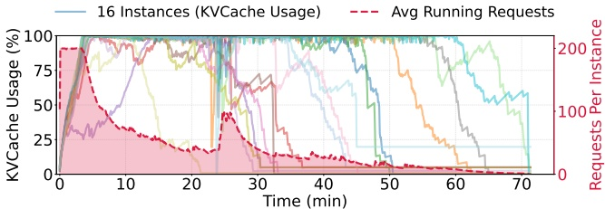
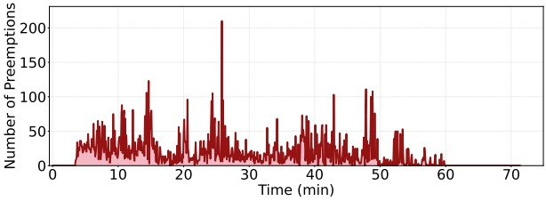
- 早期阶段：KVCache 容量不足，请求频繁被抢占（preemption count 高），系统忙于重新 prefill 而非有效生成。
- 中后期：随着短请求陆续完成，运行请求数骤降，KVCache 利用率随之跌落——大量显存闲置。
- 两条曲线共同说明：固定并发策略无论调高调低都会在某个阶段浪费资源，这正是 Seer 要用细粒度动态调度解决的。
已有方案卡在哪
rollout 的低效（利用率低 + 长尾）逼出了两条提速路线，各治一端，但都有代价：
- 路线一 · 异步 RL（StreamRL、AReaL、AsyncFlow 等）：目标是提升整体硬件利用率——让 rollout 和 training 重叠、不互相等。但这引入 off-policy——用第 i 步的参数生成的数据去训第 i+1 步甚至更后面的模型，还会有分布偏移（短样本先跑完、过度占据早期 batch），损害最终效果、也难复现调试。
- 路线二 · 投机解码（SD）：目标是加速长尾那种低并发、访存受限（memory-bound）的生成——靠并行验证把闲置算力用起来。难点在于 RL 里「draft 精度」和「draft 开销」很难兼得，具体又分两支：
- 基于模型的 SD（model-based）：用一个小 draft 模型（EAGLE、Medusa 等）。但 RL 里 target 模型每轮都在变，静态 draft 很快「过时」（model drift），接受率崩塌；draft 模型本身也带来毫秒级延迟和显存开销，大 batch 下不划算。
- 免模型的 SD（model-free）：n-gram 类方法要拿整个输入序列做匹配，长上下文下开销大，也难以低复杂度地聚合多个候选匹配。而 RhymeRL、SPEC-RL 这类方法依赖上一轮迭代的历史序列做参考——但 SOTA 训练里每轮都采样不同数据以提升泛化，根本没有历史序列可复用。
Seer 的取舍：路线一不走——坚持同步 on-policy，只把同步 rollout 本身做快（靠 divided rollout + 上下文调度治利用率与长尾）；路线二走 model-free 的一个新变体——不靠跨轮历史，而是靠同一轮迭代内的组内上下文构造草稿。
被忽略的免费信号：组内相似性
GRPO 这类算法对同一个 prompt 采样 \(n\) 个（通常 8–16，BroRL / Knapsack RL 甚至扩到 512+）回答，用组内奖励归一化算优势值。现有系统把「一组」当成一个不可分的调度单元丢给某个实例，却忽略了一个免费信号——
GRPO 的组内归一化（可选，RL 背景补充）
GRPO 不需要 critic 价值网络。对每个 prompt，从当前策略采样一组 \(n\) 个回答，用规则或奖励模型打分得到 \(r_1,\dots,r_n\)，再在组内归一化得到每个回答的优势：
Aᵢ = (rᵢ − mean(r₁…rₙ)) / std(r₁…rₙ)
然后用带 clip 的比值损失 + 对参考模型的 KL 正则更新策略。「一个 prompt → 一组回答」这个结构是所有 GRPO 变体（DAPO、GSPO 等）都保留的核心——也正是组内相似性信号的来源。
同一组回答因为条件在同一个 prompt 上，天然在生成长度和局部 token 模式上高度相似。长度反映题目难度，模式反映措辞结构。这两个信号如果在线学出来，就能同时指导「怎么调度」和「怎么加速生成」。
信号一：长度相似 → 可用于调度
同组回答的长度高度可预测。这意味着只要先跑完组里的一个「探针」请求，就能估计整组剩下的工作量（预期长度、KVCache 占用），据此做更聪明的调度，而不是靠静态启发式瞎猜。
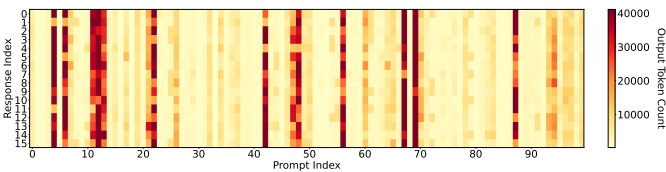
- 每一列代表 GRPO rollout 里的一个 prompt 组，每个格子是该组的一个独立回答。
- 颜色深浅编码输出长度：越深越长。
- 关键现象：同一列内的格子颜色高度一致——同组回答长度相近。而不同列之间差异很大，说明「难题组」和「易题组」泾渭分明。
- 这正是「跑一个探针就能估计整组」的依据：组内一致性高，用组里已完成请求的最大长度做估计就足够准。
信号二：模式相似 → 可用于投机解码
同组回答在语义和结构上也相似。虽然不像前缀完全匹配那样精确，但足以构造一个分组模式字典，给 n-gram 投机解码提供高质量草稿 token。作者做了实验验证：从一个 Qwen2-VL-72B 任务里采样 20 个 prompt 组，用压缩后缀树（CST）模拟投机解码，把「组内其它回答」当作参考模式。先补两点背景，再看数据。
什么是 n-gram 投机解码？CST 又是怎么「模拟」的
① 投机解码（SD）两阶段：Draft 阶段先用一个「草稿模型」快速吐出 \(\gamma\) 个候选 token；Verification 阶段让 target 模型（策略 LLM）一次并行验证这 \(\gamma\) 个。因为并行验证 \(n\) 个 token 比串行逐个生成快（访存开销更低），只要草稿命中就净赚。RL rollout 的两个麻烦：batch 剧烈波动、target 模型每轮更新导致模型漂移——传统 SD 要么草稿开销大、要么接受率低，收益甚至为负。
② n-gram（免模型）SD：干脆不用独立草稿模型，而是把「最近生成的一小段 token」当查询键，去一个模式字典里查「历史上以相同片段结尾、后面接了什么」，直接拿这段延续当草稿。好处是省掉了草稿模型的前向开销；但朴素 n-gram 要拿整个输入序列做匹配，长上下文下开销大，而且只用请求自身历史做参考、接受率低。Seer 的改法：把字典的来源换成同组其它回答。
③ CST 的结构 + 怎么模拟 SD（论文只引用 SuffixDecoding [27] 与 CST [44]、未展开，以下按被引原文补充）：
压缩后缀树长什么样：把参考序列的所有后缀塞进一棵 trie，再把「没有分叉的链」压成一条边（边上带一整段 token 而非单个）——于是节点数与序列总长成线性（后缀树经典构造，Weiner 1973），节点上再记出现频次。多条回答共享同一棵树（generalized suffix tree），公共模式自动合并计数。
组内参考序列(token): r1: … A B C D E r2: … A B C D F r3: … A B X
压缩后缀树(只画 "A B" 之后的子树):
─"A B"─┬─"C D"─┬─ E (freq 1) ← "C D" 是压缩边:r1/r2 都走过 → freq 2
│ └─ F (freq 1)
└─ X (freq 1)
- 每步取草稿（匹配）：拿当前请求已生成的末尾几个 token 当查询 pattern，从根沿 pattern 下降到最深命中节点，它的子树就是候选延续——本质是「组内别人写到这儿时，接下来通常写什么」。上例查 "A B" → 命中后 "C D" 两条参考都走过（freq 2）⇒ 高置信、整段当草稿。
- 打分 & 决定草稿多长（SuffixDecoding [27]）：给每条候选延续按经验条件频率连乘算 confidence（沿路径每步 = 该 token 频次 ÷ 父节点频次），贪心/beam 往下扩展、一旦低于阈值就截断。截断点顺带定了草稿长度——匹配越一致、confidence 掉得越慢，草稿越长，这正是它「自适应」的来源（无需外部指定 \(\gamma\)）。
- Linear vs Multi-Path（表 2 两列）：分叉处（上例的 E / F）只押最高频的一条 = Linear；用 top-\(k\) 分支（beam-search）同时押多条 = Multi-Path，命中概率更高，长尾并发低、算力富余时尤其划算。
| \(n\)（同组参考回答数） | Linear | Multi-Path (\(k=2\)) | Multi-Path (\(k=4\)) |
|---|---|---|---|
| \(n=0\)（baseline，只用自身历史） | 1.70 | 1.77 | 1.85 |
| \(n=1\) | 2.04 | 2.14 | 2.25 |
| \(n=5\) | 2.32 | 2.44 | 2.59 |
| \(n=15\) | 2.53 | 2.69 | 2.85 |
表 2：不同草稿策略下的平均接受长度（含 bonus token）。参考数量 \(n\) 从 0→1→5→15 递增，接受长度持续上升（scaling 关系）；多路草稿（multi-path）进一步提升。
结论很直接：组内其它回答就是最好的免费 draft model——它天然和 target 模型同步（都是当前策略生成的），完全不存在传统 SD 的「模型漂移」问题。
Seer：把组内信号在线学出来用
Seer 的整体流水线仍是标准配置：训练用 Megatron、rollout 用 vLLM + 异步 reward 计算、权重下发用 Moonshot Checkpoint Engine。Seer 的三个技术是叠加在这套常规架构之上的，不引入额外集成开销。rollout 子系统由三个核心模块组成。先看整体架构，再逐个拆解。
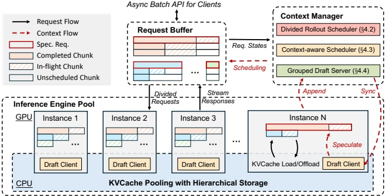
- Request Buffer：请求的中枢。一个 prompt 组被拆成 \(n\) 个独立请求，每个请求再切成更小的 chunk，带着 group ID、prompt 长度、已生成长度等元数据在这里排队、出队、回队。
- Context Manager：为每个组维护「预估输出长度」等上下文视图，是调度决策的大脑；探针请求跑完后实时更新这里的长度估计。
- Inference Engine Pool：一组推理实例 + 跨节点的全局 KVCache 池（继承自 Mooncake，DRAM/SSD 两级）。请求被迁移到不同实例时，KVCache 不用重算，直接从池里取。
- 数据流：Buffer 按调度策略把 chunk 派给最空闲的实例 → 实例生成 → 结果和长度信息回流到 Context Manager → 更新调度决策 → 下一个 chunk 重新派发。如此循环直到 <eos> 或达到 max_tokens。
下面这张对比图，是理解 Seer 的关键：(a) 传统 group-level rollout vs. (b) Seer 的 divided rollout。图分上下两大行，每行又分左右——左看「实例之间」、右看「单个实例内部」。读图前先记住两条编码规则：方块高度 = 请求长度（越高越长），方块宽度 / 竖切厚度 = batch size（同时在跑几个请求）。
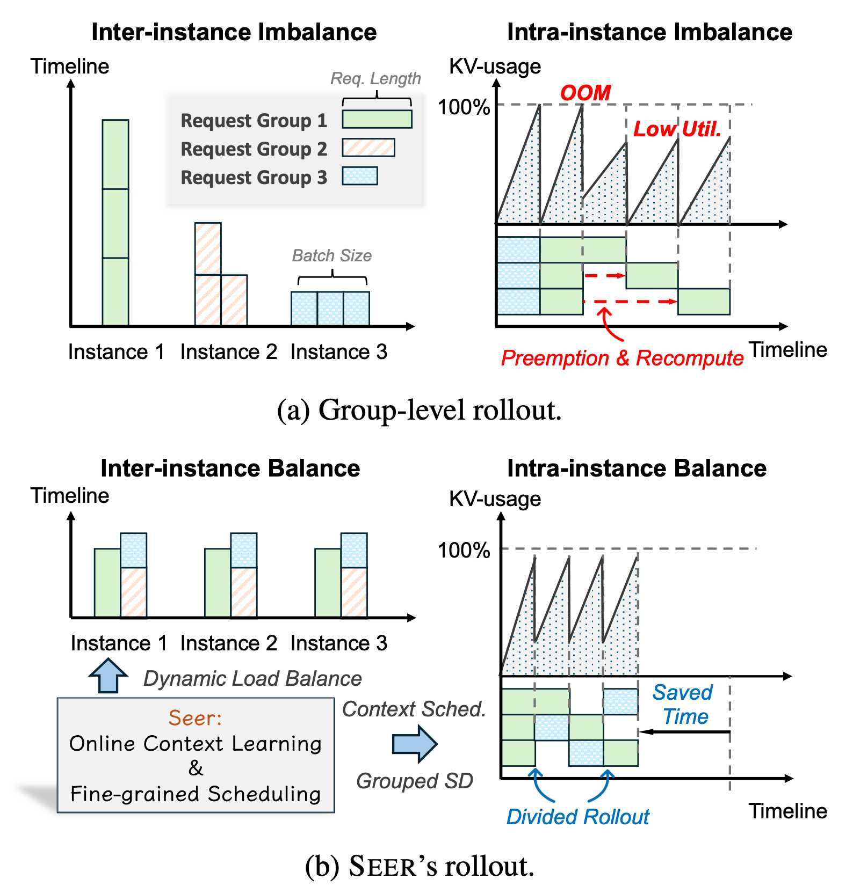
图例：三种填充 = 三个 request group（同一 prompt 采样出的一组回答）——绿色实心=组1、橙色斜纹=组2、蓝色点阵=组3。高度=请求长度，宽度/竖切厚度=并发的请求数（batch size）。
(a) 传统做法的两个「病」
- 左·实例间失衡（Inter-instance）：纵轴是时间，横轴是三个实例。传统做法把一整组绑死在一个实例上跑到完。分到长组（绿）的实例那一柱又高又窄、要跑很久；分到短组（蓝）的实例又矮又宽、很快跑完就闲着——三个实例完成时间差很远，闲置=长尾。
- 右·实例内失衡（Intra-instance）：注意这一块画的是同一个实例内部随时间的变化，不是三个实例。上下两个子图共享同一条时间横轴：
- 上子图 = 该实例的 KV-usage（显存）：锯齿形——生成 token 显存往上涨，一旦顶到 100%（OOM）就被迫抢占、掉一个齿；后期长请求主导、并发变低，锯齿越来越小 → Low Util.（利用率低）。
- 下子图 = 该实例每一刻在跑哪些请求（类甘特图）：三行 = 这个实例里并发的三个执行槽，某一刻竖切的厚度就是那一刻的 batch size，直接对应上子图的显存高低。
- 为什么第一行没抢占、二三行有？ 显存撞到 100% 装不下时，调度器必须「保少数、踢多数」：第一行是被选中保下来的请求，KVCache 不动、一路跑完，所以无抢占；第二、三行被驱逐（preempt），KVCache 被清掉腾显存，过一会儿再调度回来时缓存已没、得从头重算（recompute）——图中两条红色虚线箭头就是被踢的请求被推到更晚才恢复执行，中间那段全是浪费。
(b) Seer 的「药」
- 左·实例间均衡：组被拆成请求、再拆成小 chunk，靠动态负载均衡把长短请求摊到每个实例 → 三实例高度齐平、几乎同时完成，没人早退闲置。
- 右·实例内均衡：chunk 级的显存 footprint 可控，不再需要「踢人」；上子图锯齿稳稳贴近 100%、没有后期塌陷，且更早结束 → 右侧 Saved Time 箭头就是收益。
- 迁移能力：每次 chunk 重新入队时派给当前最空闲的实例；靠全局 KVCache 池，迁移不需要重算 prefill。
三个协同技术
点开每张卡片看完整方法。三招层层递进：先拆解出调度自由度，再用长度信号做聪明调度，最后用模式信号加速生成。
它要解决什么：传统调度里，请求一旦分到某个实例就绑死到跑完；组被当成整块，既造成实例间失衡，又浪费了组内相似性。
核心做法：Seer 基于 Request Buffer 做细粒度控制——一个组不仅拆成 n 个独立请求，每个请求还按生成长度切成多个 chunk。派发时把 max_tokens 设成一个较小的 chunk；跑完这个 chunk 就重新入队，反复提交，直到吐出 <eos> 或达到原始 max_tokens。
对比：相比被抢占触发的「被动 offload」，divided rollout 是主动迁移、不阻塞推理；相比在线服务的 live migration（如 Llumnix），它没有严格的 per-request SLO 约束，调度更灵活。
它要解决什么：即便实例间均衡了，实例内仍有失衡——显存受限时，朴素调度会把长请求一直往后拖，长尾照旧。
核心做法：利用「同组长度相似」的信号。Seer 为每组指定一个请求作为 speculative request（探针），高优先级先跑，在线估计整组的预期长度和显存占用。论文把它拆成三个核心思想（原文称「三个概念性阶段 conceptual phases」）——但注意它们在算法里是交织执行的，并非严格先后的三步：
三者不是「先做完 A、再做 B、最后 C」：B（估计更新）发生在每次决策的扫描过程中、随时进行；A 与 C 其实是同一步「选下一个请求」的两个分支——高优队列 Q_spec 非空就用 SFS 选探针（A），否则用 LFS 选长组（C）。下面伪代码可以对照看。
防偏差设计：为缓解长度预测的偏斜，调度器会间歇性地调度那些「获得执行时间偏少」的 underserved 组以防饥饿，并用「目前观测到的最大长度」保守更新估计。实验显示这套近似调度能把长尾延迟降低 89%，吞吐达到「知道所有真实长度的 Oracle 调度器」的 96%。
Algorithm 2：Context-Aware Scheduling（伪代码）
调度器被全局循环持续调用，每次返回一个决策 \((r^{\star}, i^{\star})\)（把选中的请求 \(r^{\star}\) 派给实例 \(i^{\star}\)），直到所有请求完成。符号：\(\mathcal{R}\) 活跃请求（按 prompt 组 g 组织）、\(\widehat{L}_g\) 组级长度估计、\(I\) 带 KV-usage 遥测的实例。看单次调用里 A/B/C 三个思想是怎么交织的（右侧注释标出各行落在哪个思想）：
输入: 活跃请求 R = {r_{g,i}}（按组 g）; 组级长度估计 {L̂_g}; 带 KV-usage 遥测的实例 I
输出: 一个调度决策 (r*, i*)
# 扫一遍做三分类；分类的同时顺手更新估计
for r_{g,i} ∈ R:
if r_{g,i} 已完成: L̂_g ← max(L̂_g, L_{g,i}); 移出 R # B 估计更新（发生在扫描中）
elif r_{g,i} 是探针: 放入高优队列 Q_spec # A 探针进高优
else: 放入低优候选集 C_rest
# 选下一个请求：A 与 C 是这一步的两个分支
if Q_spec 非空: r* ← Q_spec 中已生成长度最短的 # A 长度过滤：探针 SFS
elif C_rest 非空: r* ← C_rest 中 L̂_g 最大的组的请求 # C 近似 LFS
else: return 全部完成
# 切 chunk + 按 KV 用量选实例
r*.max_tokens ← min(chunk_size, r*.剩余 max_tokens)
i* ← SELECTINSTANCE(I, r* 的 chunk KV 需求, KV-usage)
return (r*, i*) if i* 存在 else 本轮无可用实例
可以看到 A/B/C 并不各占一段：B（估计更新）嵌在分类扫描里，每次调用都在跑；A 与 C 是「选请求」这一步的两个互斥分支——有探针候选就走 A 的 SFS，没有才落到 C 的 LFS。最后 SELECTINSTANCE 结合本 chunk 的 KV 需求与各实例遥测选目标，隐含「该实例装得下这个 chunk 的 KV 增量」。防饥饿（间歇调度 underserved 组）与「组内没请求完成时 L̂_g 保守设为 max_tokens」是主循环之外的 safeguard。
它要解决什么：长尾阶段并发极低、算力大量闲置，投机解码正好能用并行验证把闲置算力换成加速。但要在 RL rollout 里真正落地，有两个拦路问题，也正好对应下面两块：
- 草稿长度多长才划算？ rollout 的 batch 从数百剧烈波动到个位数，固定草稿长度必然顾此失彼——需要一套自适应草稿长度的算法（下方「一、概念与算法」）。
- 草稿从哪来？ 传统 draft 模型在 target 每轮更新下会漂移、接受率崩塌——需要一个天然与 target 同步、免独立模型的草稿来源（下方「二、实现」）。
一、概念与算法：自适应草稿长度
自适应草稿长度分两步：第一步用吞吐模型 \(T_{SD}\) 定「总量」（当前 batch 该发多少草稿 token），第二步用 MBA 把总量「切」给不同优先级的请求。
第一步：多长才划算。SD 的收益强依赖 batch size：batch 小、算力闲 → 草稿越长、并行验证越赚；batch 大、target 已 compute-bound → 长草稿的验证开销反而拖慢，甚至负收益。要量化这个权衡、找到最优长度，需要一个吞吐模型 \(T_{SD}(B,\gamma)\)：
\(T_{SD}\) 吞吐模型（推导「最优草稿长度随 batch 变化」）
符号（都是「每一步 SD」里的量：draft 先猜 \(\gamma\) 个草稿 token → target 一次并行验证）：\(\alpha=E(\beta)\) 平均接受率（\(\beta\) 是逐位置接受概率），\(\gamma\) 每步草稿数，\(B\) 当前 batch size，\(D(B,\gamma)\)/\(T(B,\gamma)\) 分别是 draft/target 的一次 forward 时间；参照物 \(T(B,1)\) 是不用 SD 时 target 每 token 的耗时。
① 一步平均产出几个 token
$$ E[\text{tokens per forward}] = \frac{1-\alpha^{\gamma+1}}{1-\alpha} $$推导：验证是从前往后逐个判定、一旦被拒就停（后面全作废）。所以「前 \(k\) 个草稿都被接受」的概率 \(\approx\alpha^{k}\)，接受数的期望按尾概率累加 \(=\alpha+\alpha^{2}+\dots+\alpha^{\gamma}\)。再加上一个白送的 bonus token——哪怕草稿全不中，target 验证时顺带算出的那个纠正 token 也是真 token，所以每步产出 = 接受数 + 1：
$$ 1+\alpha+\alpha^{2}+\cdots+\alpha^{\gamma}=\frac{1-\alpha^{\gamma+1}}{1-\alpha}\quad(\text{等比数列求和}) $$直觉检查：\(\alpha\to1\)（草稿几乎全中）→ 极限为 \(\gamma+1\)（全中，一步产出 γ+1 个）；\(\alpha\to0\)（基本不中）→ 值为 1（退化成普通解码，只剩那个 bonus token）。
② 平均「每个 token」花多少时间：一步总耗时 \(D(B,\gamma)+T(B,\gamma)\) ÷ 一步产出，就是
$$ T_{SD} = \frac{(1-\alpha)\bigl(D(B,\gamma)+T(B,\gamma)\bigr)}{1-\alpha^{\gamma+1}} $$\(T_{SD}\) 越小 = 出每 token 越快。只有当 \(T_{SD} < T(B,1)\)（比不用 SD 更快）时，SD 才真正有收益。
③ 为什么最优 \(\gamma\) 会随 batch 变化（本节重点）。盯住 \(T_{SD}\)，看 \(\gamma\) 变大时分子分母的拉扯：
- 分母 \(1-\alpha^{\gamma+1}\)：\(\gamma\) 大 → 分母大 → \(T_{SD}\) 小（好）。但边际递减——\(\alpha^{\gamma+1}\) 本就小，再猜更多也压不下去多少。
- 分子 \(D+T\)：\(\gamma\) 大 → 猜更多、验更多 → 变大（坏）。
谁占上风由 \(B\) 决定：
- \(B\) 小（长尾，甚至 \(B=1\)）：算力闲、target 处于 memory-bound，验证 \(\gamma\) 个和验证 1 个几乎一样快 → \(T(B,\gamma)\approx T(B,1)\)，分子几乎不随 \(\gamma\) 涨；draft 也便宜。于是分子不动、分母还能变大 → \(\gamma\) 越大越赚，该放长草稿。
- \(B\) 大（早期，上百）：算力已喂满、target 变 compute-bound，\(T(B,\gamma)\) 随 \(\gamma\) 快速上升，\(D(B,\gamma)\) 也不可忽略 → 分子涨得比分母快，\(\gamma\) 稍大 \(T_{SD}\) 就反弹，长草稿反而负收益。此时最优 \(\gamma\) 很小甚至该关掉 SD。
因为 rollout 里 \(B\) 从上百一路滑到 1，同一个固定 \(\gamma\) 不可能两头都最优（早期该小、长尾该大）——所以最优草稿长度必须随 \(B\) 在线重算，这正是 Algorithm 1 第一步 \(\gamma^{*}=\arg\min_{\gamma} T_{SD}(B,\gamma)\)：用当前实测的 \(B,\alpha\) 在这条曲线上挑使每 token 时间最小的 \(\gamma\)。
④ 哪些量离线、哪些量在线（论文说的「离线 profile 的 \(T_{SD}\) 模型」到底指什么）：\(T_{SD}\) 里的量分两半——
- 离线 profile（跑 RL 前测一次、反复用）：前向延迟 \(D(B,\gamma)\)/\(T(B,\gamma)\)——即「这台硬件上 draft/target 模型，给定 batch \(B\)、草稿长度 \(\gamma\)，跑一次要多少毫秒」。做法是预先在目标硬件上把 \((B,\gamma)\) 的常见组合各测一遍，存成查找表/拟合曲线。它只取决于硬件 + 模型结构 + \((B,\gamma)\) 形状，整个训练过程稳定不变，所以能离线、测一次即可。「离线 profile 的 \(T_{SD}\) 模型」指的就是这两条延迟函数。
- 在线采集（每次调用现读）：接受率 \(\alpha\) 与 batch size \(B\)。\(\alpha\) 随当前策略权重（每轮更新）、题目难度、CST 上下文漂移，\(B\) 时刻波动——都没法预先测。
所以 MBA 第一步是「拼装」：在线补上 \(\alpha,B\) 后，\(T_{SD}\) 只剩 \(\gamma\) 一个自由变量（\(D,T\) 从离线表按 \(B,\gamma\) 查），在 \(\gamma=1\dots\gamma_{max}\) 扫一遍取最小即得 \(\gamma^{*}\)。
第二步：总量怎么切给谁（边际收益感知 MBA, Algorithm 1）。第一步的 \(T_{SD}\) 只给出一个标量——总预算 \(\Gamma^{*}=\gamma^{*}\cdot B\)，且推导时把所有请求当同质、平摊 \(\gamma^{*}\)。但现实里请求分两类、并不平等：
- 高优 = 探针请求：每组那个「先跑、用来估长度」的请求。它早跑完 → 整组长度信息早暴露 → 上下文调度更准 → 整个 rollout 长尾更短。加速探针有系统级的「杠杆效应」。
- 低优 = 其余普通请求：加速它们只是让自己快一点，没有额外的系统收益。
所以问题升级为「这 \(\Gamma^{*}\) 该多分给高优、还是低优」——MBA 就是这个在线分配算法（下面伪代码把核心思想与代码逐行对上）：
Algorithm 1：Marginal-Benefit-Aware Adaptive Speculation（伪代码）
「边际收益」= 给某优先级再加一个草稿 token 带来的期望增益：
$$ \text{benefit}_h = B_h\cdot(\beta[\gamma_h]-\beta[\gamma_h{+}1]),\quad \text{benefit}_l = B_l\cdot(\beta[\gamma_l]-\beta[\gamma_l{+}1]) $$逐项拆解，为什么长这样：
- 为什么用相邻差 \(\beta[\gamma]-\beta[\gamma{+}1]\)，而不是 \(\beta\) 本身：贪心分配比的是「下一块预算花在哪更值」，看的是再加一格带来的增量，所以取差分。又因 \(\beta\) 逐位置递减（越靠后的草稿越难连续命中），这个差分随 \(\gamma\) 变大而变小——典型的边际递减：第 1 个草稿很值，第 8 个没多少油水。
- 为什么乘 batch size \(B_h\)：一个草稿位置的决定会同时施加到这一拨所有请求上，所以收益按人数放大。
三个核心思想与代码的对应（右侧注释标出）：
# 思想① 定预算：由吞吐模型 T_SD 求当前 batch 的最优总草稿预算
γ* ← argmin_γ T_SD(B, γ); Γ* ← γ* · B
if Γ* < B_h: return (0, 0) # 连高优保底都不够 → 关闭投机
# 思想② 高优保底：每个高优请求先发 1 个草稿 token
γ_h ← 1, γ_l ← 0
# 思想③ 贪心分配剩余预算：每轮喂给「边际收益更高」的一方
while 还有预算:
if benefit_h > λ · benefit_l: γ_h += 1 # λ≥1 偏向高优（探针）
else: γ_l += 1
受 γ_max 上限与剩余预算约束；两边都不能再加则停
return (γ_h, γ_l)
\(\lambda\) 到底在调什么（最容易懵的一格）：判据不是 \(\text{benefit}_h > \text{benefit}_l\)，而是 \(\text{benefit}_h > \lambda\cdot\text{benefit}_l\)——低优要「打折扣、过更高门槛」才拿得到预算。\(\lambda=1\) 时纯按收益大小分（不偏袒、纯吞吐最优）；\(\lambda=2\)（实验值）则给高优 2 倍优待。为什么偏袒高优：探针的杠杆效应（早暴露长度 → 长尾更短）是系统级收益，没被写进 benefit 公式（公式只算了自己这拨的 token 产出）——\(\lambda\) 就是那个旋钮，把这份收益人为补回来，量化「愿意牺牲多少纯吞吐去换探针延迟下降」。
为何一定收敛：\(\beta\) 逐位置递减 ⇒ 两边 benefit 随自己已分到的量单调下降，每投一个就扣掉对应预算——「把下一格投给当前收益更高的一方」会让两边边际收益趋于拉平（预算约束下的水填充最优），长草稿只在真正划算时才拿得到。\(\lambda\in[1,\infty)\) 与判据均按论文原式转写。
两点补充：① MBA 周期性调用（请求特征在短时间窗内相对稳定），每次现读 \(\alpha,B\) 重算一遍。② 长尾阶段并发极低 → 单请求分到的草稿自然变长，并叠加多路（multi-path）投机：单路沿用 SuffixDecoding 的置信度打分过滤低概率候选，多路则用 beam-search 返回多个候选路径。此时组内已完成请求越多、CST 上下文越丰富，长尾请求接受长度越高（见表 2 的 scaling）。
二、实现：DGDS 分布式草稿服务器
草稿从哪来：Seer 部署 DGDS（Distributed Grouped Draft Server，分布式分组草稿服务器），为每个组维护一棵压缩后缀树（CST），聚合该组所有请求生成的 token 序列。CST 就是一个高精度、动态、且天然与 target 同步的「draft model」——因为草稿来自当前策略自己生成的同组回答，不存在漂移。相比要匹配整个输入序列的朴素 n-gram，CST 能以低复杂度给出草稿 token。
DGDS 采用 master-worker 分布式架构，四步运转（把「更新 CST」从模型执行的关键路径上剥离、异步进行，这是它相比传统后缀树方法降低 draft 时延的关键）：
update_cstregister_group 注册活跃组，再定期 fetch_cst 增量同步最新 CST；只拉取本实例正在处理的组。batch_speculate 采用零拷贝：直接读写推理引擎的显存 buffer。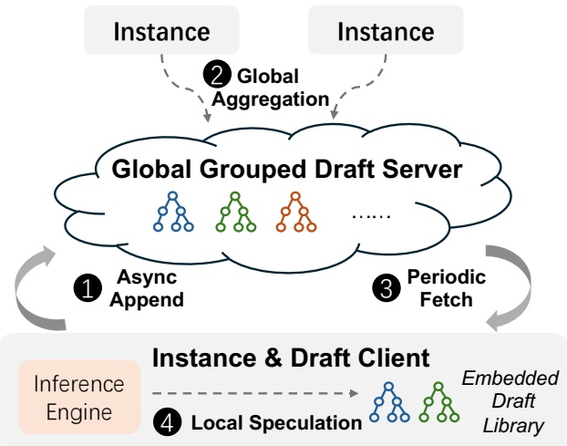
- 中心 server：维护每个组的 CST，接收各实例异步 append 的 token，按 request_id 隔离聚合。
- 各实例的 draft client：定期增量 fetch 本实例相关组的 CST，本地做投机，不走中心节点的关键路径，降低延迟。
- 多 server 部署：按 group 哈希路由，避免通信和存储热点。
- 数据流：token 上行（append）→ 中心聚合成 CST → CST 下行（fetch）→ 本地投机。上下行都做批处理/增量以省带宽。
效果：吞吐翻倍，长尾几乎消失
测试床共 32 个节点 × 8 张 H800；用 GRPO 跑三个不同规模的模型，各自使用 32 / 128 / 256 张 GPU（Moonlight 32GB / Qwen2-VL-72B 146GB / Kimi-K2 1TB）。为排除干扰，所有系统（含 Seer）都跑在同一套 in-house vLLM 推理引擎上；Seer 在算法逻辑上与同步 veRL 完全一致，训练结果相同，只优化 rollout 性能。
对比的三类 baseline 覆盖了同步调度、长尾缓解、投机解码三个方向：
veRL
SOTA 同步 RL 系统，工程高度优化的 round-robin 调度，作为主 baseline 衡量端到端提升。
StreamRL-Oracle
把 StreamRL 的 Skewness-Aware 分桶调度移植过来，且喂真实长度（上界最优）。但它仍把请求组当不可抢占的原子单元；遇到 OOD 负载（Kimi-K2）甚至不如朴素 veRL。
Vanilla SD
按模型族分别配强投机解码 baseline：Moonlight 用 SuffixDecoding，Qwen 用 Qwen2-7B-VL draft 模型，Kimi-K2 用 MTP，且集成进 veRL 与 StreamRL-Oracle。
| 工作负载特征 | Moonlight | Qwen2-VL-72B | Kimi-K2 |
|---|---|---|---|
| 模型规模 | 32 GB | 146 GB | 1 TB |
| GPU 总数 / 每实例 | 32 / 1 | 128 / 8 | 256 / 32 |
| 每迭代请求数 | 3,200 | 9,600 | 6,400 |
| 组大小 (n) | 8 | 16 | 8 |
| 温度 | 1.0 | 0.8 | 1.0 |
| 最大生成长度 | 65,536 | 40,960 | 98,304 |
| 平均生成长度 | 22,386 | 7,615 | 38,959 |
表 3：三个 RL 任务的模型配置与负载特征。页面多处提到的「9.8 万 token」正是 Kimi-K2 的 98,304 上限；每迭代请求数 = prompt 数 × 组大小。
端到端结果
先看最直接的三任务对比：rollout 吞吐（图 7）与长尾延迟（图 8）。Seer 在三个任务、两种组大小（8 / 16）下都全面胜出，对 veRL 提升 44–104%，也优于 StreamRL-Oracle 与各种 vanilla SD。显存受限任务（Moonlight、Qwen2-VL-72B）收益最大；组越大 veRL 的组级调度失衡越严重、吞吐越掉，而 Seer 反而更稳。
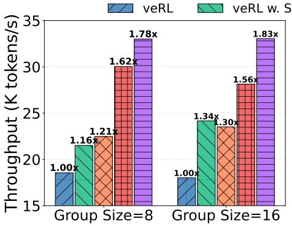
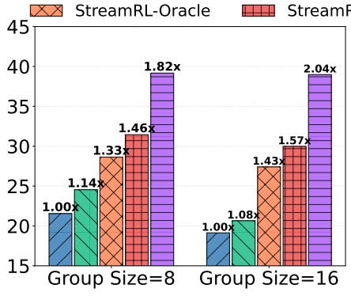
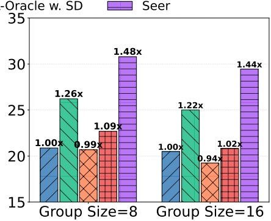
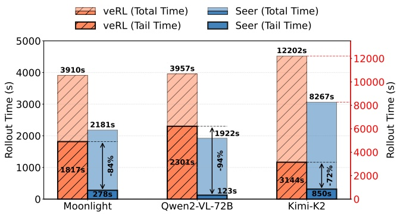
长尾到底有多严重
作者用 Qwen2-VL-72B 在 veRL 上的一次迭代给出量化证据：一轮 rollout 里发生 13,686 次抢占；最后 5% 完成的请求，长度落在前 15 百分位，但平均开始执行的时刻已在总时间的 42%——长请求被一路往后拖。实例间失衡更夸张：最早与最晚实例的完成时间差占总时间的 70%，每个实例平均空转 1,580 秒（约总时间的 37%）。这就是长尾的根源。
逐项拆解贡献
把三个技术依次叠加，看每一层各贡献多少（数字为相对 baseline 的吞吐倍数，各取第 5 个 rollout 迭代）：
| 方法（累加） | Moonlight | Qwen2-VL-72B | Kimi-K2 |
|---|---|---|---|
| Baseline (veRL) | 1.00 | 1.00 | 1.00 |
| + Divided Rollout | 1.41× | 1.42× | 1.16× |
| + Context Scheduling | 1.47× | 1.56× | 1.27× |
| + Grouped SD | 1.90× | 2.04× | 1.53× |
表 4：性能提升拆解。拆分 rollout 最多贡献 +42%；上下文调度再 +14%；分组投机解码在调度基础上再 +26~48%。三者协同缺一不可，Qwen2-VL-72B 上叠满到 2.04×。
吞吐提升从何而来？把 Seer 运行时的显存曲线（图 9）和前面 baseline 的图 3(a) 对照，就是「问题—解法」的完整闭环：baseline 前期抢占、后期利用率跌落；Seer 全程满载，长尾被压短——这正是表 4 中「Divided Rollout + Context Scheduling」两层贡献的来源。
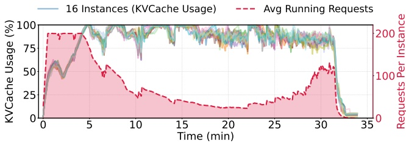
延伸研究
三个延伸实验分别拷问：长度信号对调度到底值多少（§4.4.1）、Seer 的投机解码相比 vanilla SD 强在哪（§4.4.2），以及和放弃严格同步的 Partial Rollout 比会怎样（§4.4.3）。
研究一：长度上下文对调度有多重要
对比四档配置：Baseline、No-Context（只做 divided rollout、不用长度信号）、Context-Aware（即 Seer）（完整上下文调度）、Oracle（提前知道所有真实长度、跑 LFS 的理论上界）。结论：只有 divided rollout 时长尾仅降 21%；加上下文调度后长尾降 89%、吞吐达到 Oracle 的 96%。说明「探针估长度 + 近似 LFS」这套在线学习才是长尾问题的真正解药。
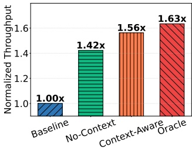
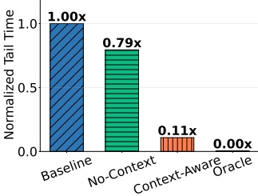
研究二：分组投机解码 vs. vanilla SD
在 veRL 上跑一次迭代，对每个模型族对比 No SD / Vanilla SD / Seer 的分组 SD（图 11，柱高为归一化吞吐，柱上标注平均接受长度 \(\tau\)）。Seer 的自适应分组 SD 在三个任务上都胜过 vanilla SD，最高 1.3×；靠组上下文，平均接受长度比纯 CST 方法（SuffixDecoding）高 0.22，也超过 MTP。有意思的反例：用小 draft 模型的 vanilla SD 虽然 \(\tau\) 略高（Qwen 上 2.19 vs 2.15），但 draft 模型开销太大，反而总吞吐最低——印证了「高 \(\tau\) ≠ 高吞吐，draft 开销才是关键」。
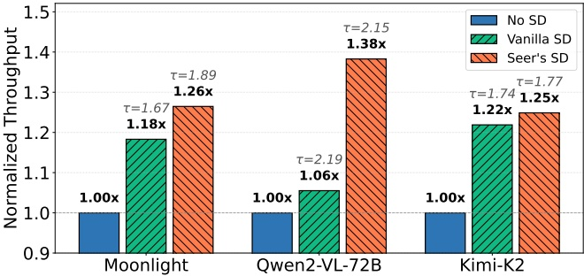
研究三：对比 Partial Rollout（非严格同步）
Partial Rollout 是流行的非严格同步方案：超发请求、跑完预定数量就结束 rollout，剩下的长尾挪到下一轮高优先跑。按 APRIL 的设置超发 2 倍请求，在 Qwen2-VL-72B 上对比——Seer 平均吞吐高 43%。原因有二：其一，显存受限的 long-CoT 场景里，翻倍的请求量反而加剧抢占，吃不下它名义上的高并发；其二，Seer 的分组投机解码进一步加速了长生成。更重要的是训练质量：图 12(b) 显示 Partial Rollout 生成的长输出占比明显偏低——它系统性地漏掉了长尾样本，这种分布偏移可能损害 RL 训练效果。
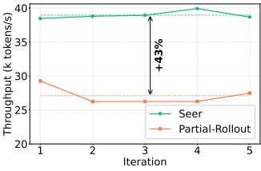
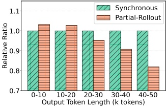
为什么这篇值得读
Seer 的聪明之处不在于发明新算法，而在于发现了一个一直摆在眼前的免费信号：GRPO「一个 prompt 采一组回答」的结构，让同组回答在长度和模式上高度相似。把这个信号在线学出来，就能同时解决调度（长度）和生成加速（模式）两个问题——而且全程严格 on-policy，不拿算法精度换性能。
如果你在做同步 / on-policy 的 GRPO 类 RL 训练、且被 rollout 长尾和显存抢占折磨，Seer 的三招值得借鉴。作者也指出这些技术可以适配到异步场景。反之，如果你已经全面拥抱异步、不在乎 off-policy 带来的分布偏移，那长尾问题的动机就没那么强。